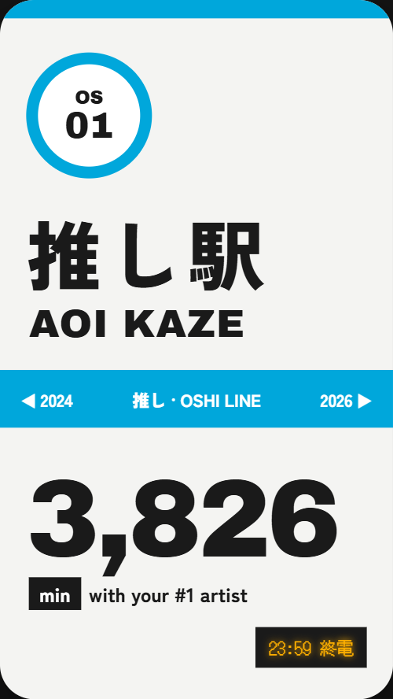
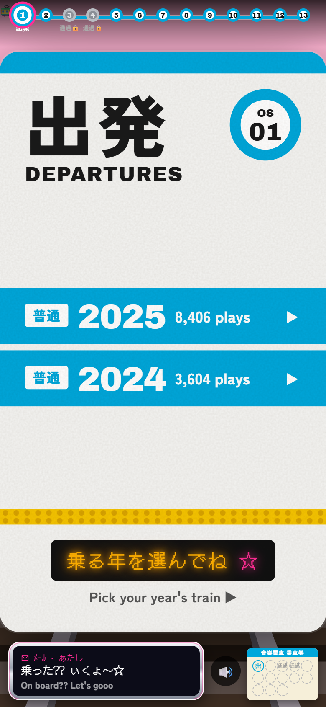
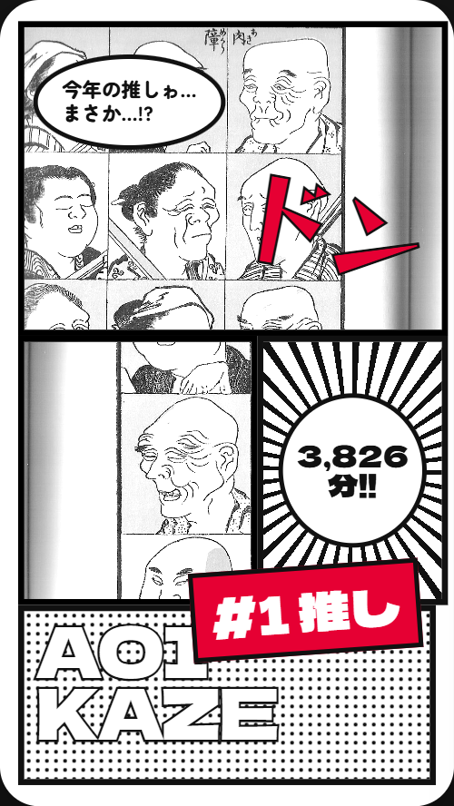
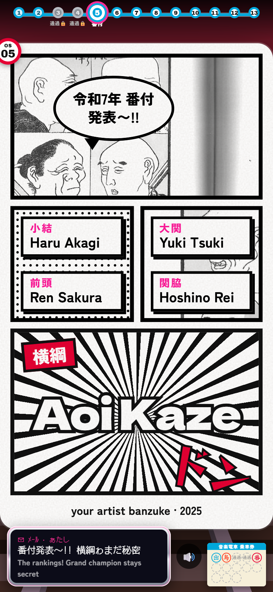
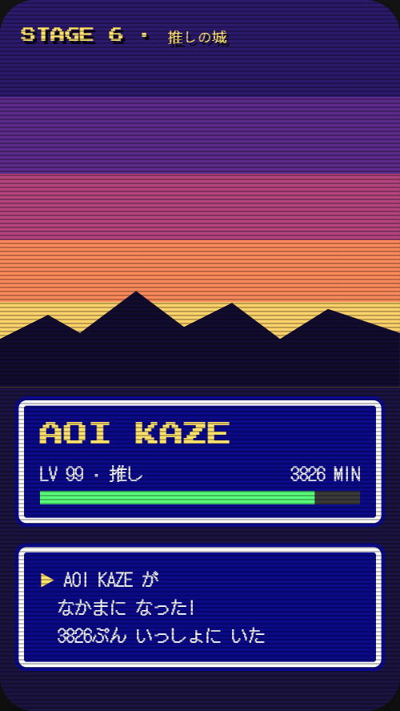
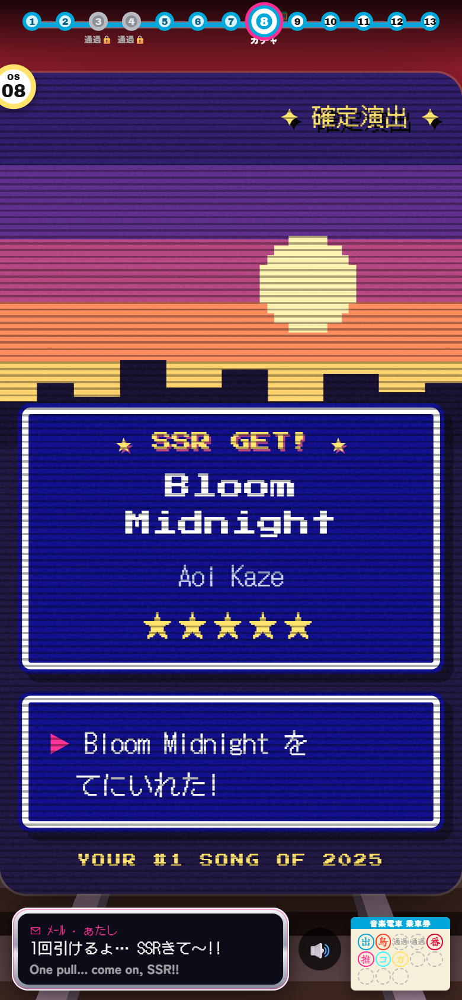
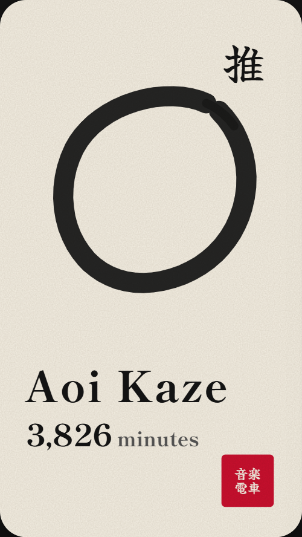
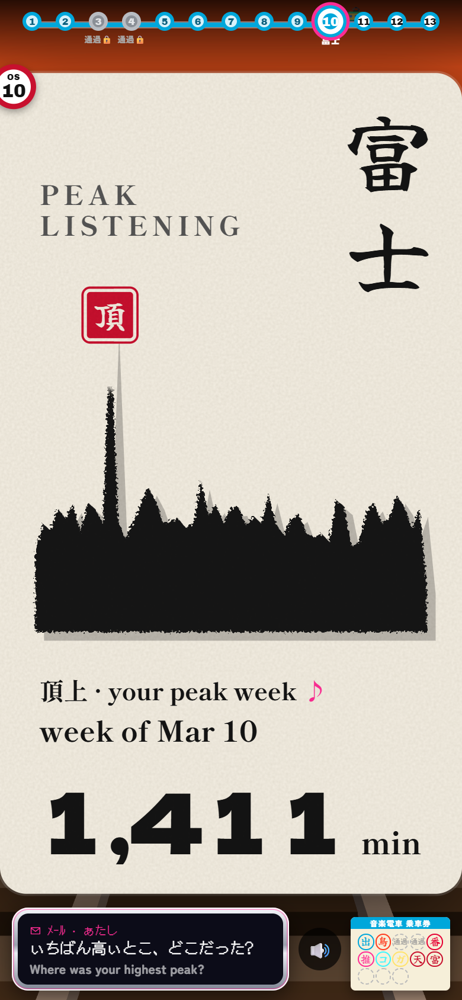

Each built station (headless Chrome, 390×844 phone emulation, demo data, reduced motion) beside its approved mockup. Mockups show the shared sample slide (your #1 artist); the built slides show each station's own stats, so compare the language, not the content.
1 · Departure → F wayfinding

Mockup F

Built
Matches
Line-colour bar, OS number circle, huge Zen Kaku kanji, Archivo Black English.
Years are full-bleed platform strips; the amber LED chip is carried over.
Off
No hero number: the departure board has no single stat, so this is intentional.
With only two years the board is sparse. Fixed by centring the rows and adding a tactile platform strip.
5 · Sumo → D shōnen manga

Mockup D

Built
Matches
Ink-bordered panel grid, Hokusai Manga crops, speech bubble, speed-line splash, red ドン with ink stroke, one spot red.
Off
The mockup splash has a halftone ground behind the name; ours uses speed lines (closer to the mockup's other panel). It's fine.
The docked sign covered the speech bubble. Fixed by moving the bubble.
8 · Gacha → K JRPG pixel

Mockup K

Built
Matches
Stepped sunset bands, pixel mountains, blue menu windows with white borders, CRT scanlines, the typed "てにいれた!" box.
Off
The mockup's HP bar is not used: it would need a number we'd have to invent.
Fixed during the build: a mid-word line break, the label's fallback font, and the empty sky (a pixel sun added).
10 · Fuji → I sumi ink

Mockup I

Built
Matches
Rice paper, vertical Yuji Syuku title, Shippori Mincho text, one red seal, the brushed ink mass.
Off
The weekly ridge is spiky, so it reads more like an ink skyline than a calm Fuji. It is the real data; smoothing it would misstate the weeks.
Fixed during the build: the hero number overflowed, the label collided with 富士, and the seal floated above the summit.